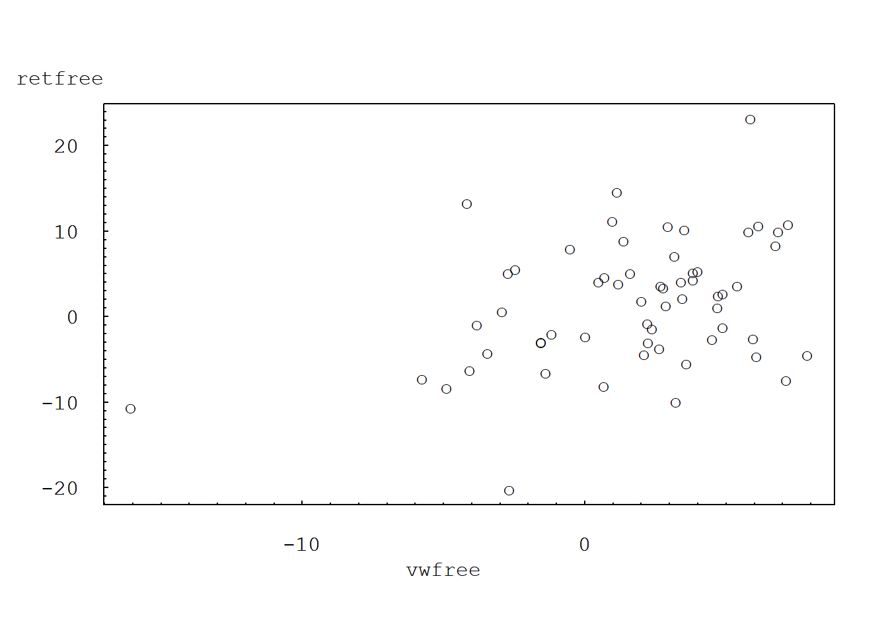
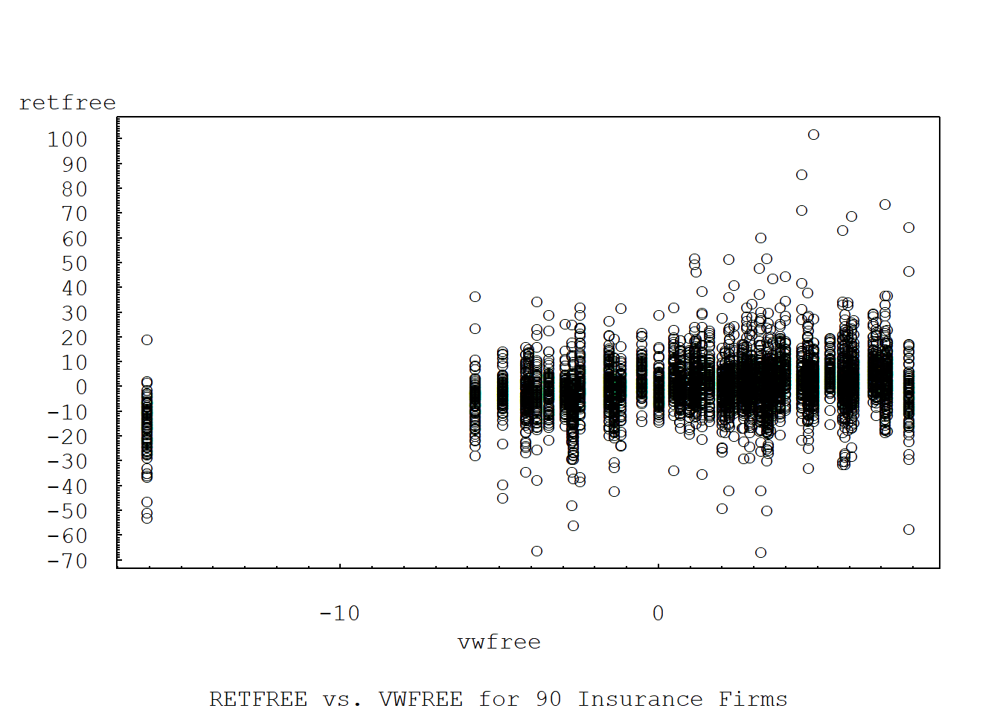
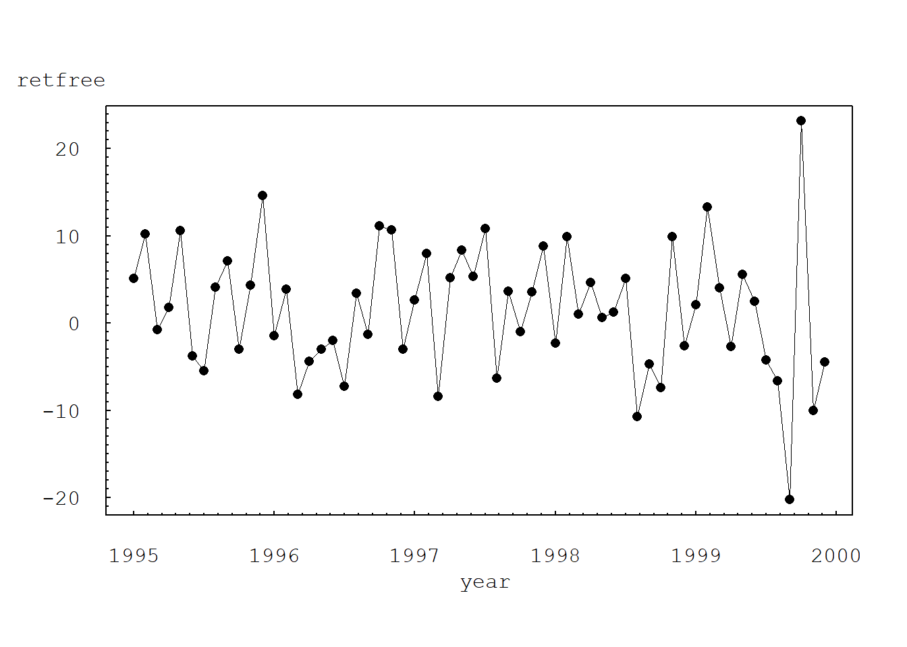
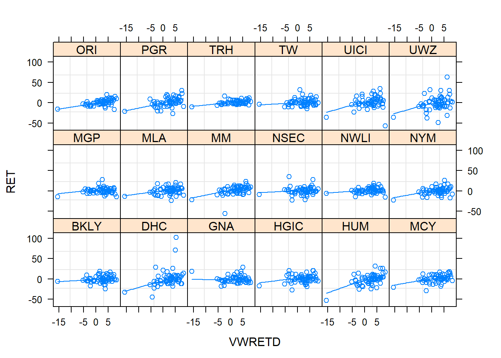

Chapter 7 Dynamic Models
7.1 Import Data
#insbeta=read.table(choose.files(), header=TRUE, sep="\t")
library(nlme)
insbeta=read.table("TXTData/insbeta.txt", sep ="\t", quote = "",header=TRUE)
insbeta$YEAR=1995+(insbeta$Time-1)/12This is the data used at page 302 for 8.6 Example: Capital Asset Pricing Model. No more information could be found.
7.2 Example 8.6: Capital Asset Pricing Model (Page 302)
The capital asset pricing model (CAPM) is a representation that is widely used in financial economics. An intuitively appealing idea, and one of the basic characteristics of the CAPM, is that there should be a relationship between the performance of a security and the performance of the market. One rationale is simply that if economic forces are such that the market improves, then those same forces should act upon an individual stock, suggesting that it also improve. We measure performance of a security through the return. To measure performance of the market, several market indices exist for each exchange. As an illustration, in the following we use the return from the “value-weighted” index of the market created by the Center for Research in Securities Prices (CRSP). The value-weighted index is defined by assuming a portfolio is created when investing an amount of money in proportion to the market value (at a certain date) of firms listed on the New York Stock Exchange, the American Stock Exchange, and the Nasdaq stock market.
7.2.1 Plot of RETFREE vs. VWFREE for Incoln insurance company
plot(retfree ~ vwfree, data = subset(insbeta, insbeta$PERMNO==49015), type="p", xaxt="n", yaxt="n", ylab="", xlab="", font=10, cex=1, pch="o", las=1, mkh=0.0001, lwd=0.5)
axis(2, at=seq(-30, 30, by=10), las=1, font=10, cex=0.005, tck=0.01)
axis(2, at=seq(-30, 30, by=1), lab=F, tck=0.005)
axis(1, at=seq(-20,20, by=10), font=10, cex=0.005, tck=0.01)
axis(1, at=seq(-20,20, by=1), lab=F, tck=0.005)
axis(2, at=seq(-70, 110, by=10), las=1, font=10, cex=0.005, tck=0.01)
axis(2, at=seq(-70, 110, by=1), lab=F, tck=0.005)
axis(1, at=seq(-20,10, by=10), font=10, cex=0.005, tck=0.01)
axis(1, at=seq(-20,10, by=1), lab=F, tck=0.005)
mtext("retfree", side=2, line=0, at=28, font=10, cex=1, las=1)
mtext("vwfree", side=1, line=2, at=-5, font=10, cex=1)
7.2.2 Plot of RETFREE vs. VWFREE for 90 insurance firms
plot(retfree ~ vwfree, data =insbeta, type="p", xaxt="n", yaxt="n", ylab="", xlab="", font=10, cex=1, pch="o", las=1, mkh=0.0001, lwd=0.5)
axis(2, at=seq(-70, 110, by=10), las=1, font=10, cex=0.005, tck=0.01)
axis(2, at=seq(-70, 110, by=1), lab=F, tck=0.005)
axis(1, at=seq(-20,10, by=10), font=10, cex=0.005, tck=0.01)
axis(1, at=seq(-20,10, by=1), lab=F, tck=0.005)
mtext("retfree", side=2, line=0, at=115, font=10, cex=1, las=1)
mtext("vwfree", side=1, line=2, at=-5, font=10, cex=1)
mtext("RETFREE vs. VWFREE for 90 Insurance Firms", side=1, line=4, at=-5, font=10, cex=1)
7.2.3 Plot of RETFREE vs. YEAR for Lincoln insurance company
plot(retfree ~ YEAR, data = subset(insbeta, insbeta$PERMNO==49015), type="o", xaxt="n", yaxt="n", ylab="", xlab="", font=10, cex=1, pch=16, las=1, mkh=0.0001, lwd=0.5)
axis(2, at=seq(-30, 30, by=10), las=1, font=10, cex=0.005, tck=0.01)
axis(2, at=seq(-30, 30, by=1), lab=F, tck=0.005)
axis(1, at=seq(1995,2000, by=1), font=10, cex=0.005, tck=0.01)
axis(1, at=seq(1995,2000, by=0.1), lab=F, tck=0.005)
mtext("retfree", side=2, line=0, at=28, font=10, cex=1, las=1)
mtext("year", side=1, line=2, at=1997.50, font=10, cex=1)
mtext("Lincoln RETFREE vs. YEAR", side=1, line=5, at=1997.50, font=10, cex=1)
7.2.4 Table 8.2 Summary statistics for market index and risk-free security
LINCOLN<-subset(insbeta, insbeta$PERMNO==49015)
summary(LINCOLN[, c("VWRETD", "SPRTRN", "riskf", "vwfree", "spfree")]) VWRETD SPRTRN riskf vwfree
Min. :-15.6765 Min. :-14.5797 Min. :0.2964 Min. :-16.0683
1st Qu.: -0.2581 1st Qu.: 0.1612 1st Qu.:0.3811 1st Qu.: -0.6755
Median : 2.9464 Median : 2.6730 Median :0.4147 Median : 2.5174
Mean : 2.0914 Mean : 2.0380 Mean :0.4075 Mean : 1.6839
3rd Qu.: 4.9429 3rd Qu.: 5.0748 3rd Qu.:0.4267 3rd Qu.: 4.5654
Max. : 8.3054 Max. : 8.0294 Max. :0.4829 Max. : 7.8798
spfree
Min. :-14.9714
1st Qu.: -0.2533
Median : 2.2244
Mean : 1.6305
3rd Qu.: 4.6481
Max. : 7.7330 sd1<-sqrt(diag(var(insbeta[,c("VWRETD", "SPRTRN", "riskf", "vwfree", "spfree")])))
sd1 VWRETD SPRTRN riskf vwfree spfree
4.09890088 3.98794716 0.03380599 4.09997511 3.98932881 cor(LINCOLN[,c("VWRETD", "SPRTRN", "riskf", "vwfree", "spfree")]) VWRETD SPRTRN riskf vwfree spfree
VWRETD 1.0000000 0.97950897 -0.02765660 0.99996603 0.97940410
SPRTRN 0.9795090 1.00000000 -0.03663843 0.97955443 0.99996414
riskf -0.0276566 -0.03663843 1.00000000 -0.03589477 -0.04509984
vwfree 0.9999660 0.97955443 -0.03589477 1.00000000 0.97951935
spfree 0.9794041 0.99996414 -0.04509984 0.97951935 1.00000000Table 8.2 summarizes the performance of the market through the return from the value-weighted index, VWRETD, and risk free instrument, RISKFREE. We also consider the difference between the two, VWFREE, and interpret this to be the return from the market in excess of the risk-free rate.
7.2.5 TABLE 8.3 Summary statistics for individual security returns
summary(insbeta[,c("RET", "retfree", "PRC")]) RET retfree PRC
Min. :-66.1972 Min. :-66.5785 Min. : 0.81
1st Qu.: -3.8462 1st Qu.: -4.2428 1st Qu.: 14.25
Median : 0.7453 Median : 0.3402 Median : 26.88
Mean : 1.0521 Mean : 0.6446 Mean : 547.11
3rd Qu.: 5.8823 3rd Qu.: 5.4675 3rd Qu.: 45.89
Max. :102.5000 Max. :102.0850 Max. :78305.00 # STANDARD DEVIATION
sd1<-sqrt(diag(var(insbeta[,c("RET", "retfree", "PRC")])))
sd1 RET retfree PRC
10.03772 10.03552 5178.49653 cor(insbeta[,c("RET", "VWRETD", "SPRTRN", "riskf", "retfree", "vwfree", "spfree")]) RET VWRETD SPRTRN riskf retfree
RET 1.00000000 0.2937725 0.28237030 0.06693926 0.99999435
VWRETD 0.29377254 1.0000000 0.97950897 -0.02765660 0.29393029
SPRTRN 0.28237030 0.9795090 1.00000000 -0.03663843 0.28255580
riskf 0.06693926 -0.0276566 -0.03663843 1.00000000 0.06358534
retfree 0.99999435 0.2939303 0.28255580 0.06358534 1.00000000
vwfree 0.29314362 0.9999660 0.97955443 -0.03589477 0.29332899
spfree 0.28170525 0.9794041 0.99996414 -0.04509984 0.28191911
vwfree spfree
RET 0.29314362 0.28170525
VWRETD 0.99996603 0.97940410
SPRTRN 0.97955443 0.99996414
riskf -0.03589477 -0.04509984
retfree 0.29332899 0.28191911
vwfree 1.00000000 0.97951935
spfree 0.97951935 1.00000000Table 8.3 summarizes the performance of individual securities through the monthly return, RET. These summary statistics are based on 5,400 monthly observations taken from 90 firms. The difference between the return and the corresponding risk-free instrument is RETFREE.
7.2.6 TABLE 8.4 Fixed effects models
#HOMOGENEOUS MODEL
insbetahomo<-gls(retfree~vwfree, method="REML", data=insbeta)
anova(insbetahomo)Denom. DF: 5398
numDF F-value p-value
(Intercept) 1 24.3686 <.0001
vwfree 1 508.1788 <.0001insbetahomo$sigma^2[1] 92.06322AIC(insbetahomo)[1] 39757.19logLik(insbetahomo)*(-2)'log Lik.' 39751.19 (df=3)insbeta$FACPERM<-factor(insbeta$PERMNO)
#VARIABLE INTERCEPT MODEL
insbetafx1<-gls(retfree~vwfree+FACPERM, method="REML", data=insbeta)
anova(insbetafx1)Denom. DF: 5309
numDF F-value p-value
(Intercept) 1 24.2193 <.0001
vwfree 1 505.0665 <.0001
FACPERM 89 0.6285 0.9975insbetafx1$sigma^2[1] 92.63053AIC(insbetafx1)[1] 39672.63logLik(insbetafx1)*(-2)'log Lik.' 39488.63 (df=92)#VARIALBE SLOPES MODEL
insbetafx2<-gls(retfree~vwfree*FACPERM-vwfree-FACPERM, method="REML", data=insbeta)
anova(insbetafx2)Denom. DF: 5309
numDF F-value p-value
(Intercept) 1 24.712995 <.0001
vwfree:FACPERM 90 7.562791 <.0001insbetafx2$sigma^2[1] 90.78022AIC(insbetafx2)[1] 39830.52logLik(insbetafx2)*(-2)'log Lik.' 39646.52 (df=92)#VARIABLE INTERCEPTS AND SLOPES MODEL
insbetafx3<-gls(retfree~vwfree*FACPERM, method="REML", data=insbeta)
anova(insbetafx3)Denom. DF: 5220
numDF F-value p-value
(Intercept) 1 24.6569 <.0001
vwfree 1 514.1906 <.0001
FACPERM 89 0.6399 0.9966
vwfree:FACPERM 89 2.0776 <.0001insbetafx3$sigma^2[1] 90.98683AIC(insbetafx3)[1] 39712.59logLik(insbetafx3)*(-2)'log Lik.' 39350.59 (df=181)#VARIABLE SLOPES MODEL WITH AR(1) TERM
insbetafx4<-gls(retfree~vwfree:FACPERM, data=insbeta, method="REML", correlation=corAR1(form=~1|PERMNO)) #Model probably not working
anova(insbetafx4)Denom. DF: 5309
numDF F-value p-value
(Intercept) 1 29.285237 <.0001
vwfree:FACPERM 90 7.941803 <.0001insbetafx4$sigma^2[1] 90.76872AIC(insbetafx4)[1] 39796.92logLik(insbetafx4)*(-2)'log Lik.' 39610.92 (df=93)insbetafx4$modelStructcorStruct parameters:
[1] -0.1689266Table 8.4 summarizes the fit of each model. Based on these fits, we will use the variable slopes with an \(AR(1)\) error term model as the baseline for investigating time-varying coefficients.
Then we can include random effects:
insbetarm<-lme(retfree~vwfree, data=insbeta, random=~vwfree-1|PERMNO) #Random - Effects Model
insbetarco<-lme(retfree~vwfree, data=insbeta, random=~1+vwfree|PERMNO, correlation=corAR1(form=~1|PERMNO),control = lmeControl(opt = "optim"))
#due to convergence problem, I add the "control = lmeControl(opt = "optim")".
#Random - Coefficients Model
summary(insbetarm)Linear mixed-effects model fit by REML
Data: insbeta
AIC BIC logLik
39738.53 39764.91 -19865.27
Random effects:
Formula: ~vwfree - 1 | PERMNO
vwfree Residual
StdDev: 0.2569603 9.527865
Fixed effects: retfree ~ vwfree
Value Std.Error DF t-value p-value
(Intercept) -0.5644229 0.14016877 5309 -4.026737 1e-04
vwfree 0.7179819 0.04164033 5309 17.242464 0e+00
Correlation:
(Intr)
vwfree -0.289
Standardized Within-Group Residuals:
Min Q1 Med Q3 Max
-7.18150077 -0.49947031 -0.02643177 0.46193572 10.17362517
Number of Observations: 5400
Number of Groups: 90 summary(insbetarco)Linear mixed-effects model fit by REML
Data: insbeta
AIC BIC logLik
39697.8 39743.95 -19841.9
Random effects:
Formula: ~1 + vwfree | PERMNO
Structure: General positive-definite, Log-Cholesky parametrization
StdDev Corr
(Intercept) 0.5759112 (Intr)
vwfree 0.3182517 -0.831
Residual 9.5058076
Correlation Structure: AR(1)
Formula: ~1 | PERMNO
Parameter estimate(s):
Phi
-0.08830483
Fixed effects: retfree ~ vwfree
Value Std.Error DF t-value p-value
(Intercept) -0.5905640 0.14322023 5309 -4.123468 0
vwfree 0.7378101 0.04596025 5309 16.053222 0
Correlation:
(Intr)
vwfree -0.508
Standardized Within-Group Residuals:
Min Q1 Med Q3 Max
-7.20057083 -0.49733487 -0.02677384 0.46069650 10.22355808
Number of Observations: 5400
Number of Groups: 90 Cleaning up companies with more than one Ticker names but having the same PERMNO:
tab<-as.matrix(xtabs(~PERMNO+TICKER, insbeta)) #a logical matrix cross-tabulation of PERMNO and TIcker
which(rowSums(tab>0)>1)10085 10388 10933 11203 11371 11406 11713 22198 37226 48901 52936 58393
1 5 10 12 13 14 16 24 30 41 44 50
60687 76099 76697 77052 77815
56 72 79 83 86 # PERMNOs that have more than one ticker
#10085 10388 10933 11203 11371 11406 11713 22198 37226 48901 52936 58393 60687
# 1 5 10 12 13 14 16 24 30 41 44 50 56
#76099 76697 77052 77815
# 72 79 83 86
# For each PERMNO go through the following code check on the the TICKER names and frequency
# which(tab["10388",]>0)
#TREN TWK
# 96 99
#> tab["10388", c(96,99)]
# TREN TWK
# 57 3 # THIS SHOWS THE FREQUENCY AS WELL AS THE TICKER NAMES FOR ONE SINGLE PERMNO "10388"Recode Tickers:
insbeta$TICKER[insbeta$PERMNO=="10085"]<-"UICI"
insbeta$TICKER[insbeta$PERMNO=="10388"]<-"TREN"
insbeta$TICKER[insbeta$PERMNO=="10933"]<-"MKL"
insbeta$TICKER[insbeta$PERMNO=="11203"]<-"PXT"
insbeta$TICKER[insbeta$PERMNO=="11371"]<-"HCCC"
insbeta$TICKER[insbeta$PERMNO=="11406"]<-"CSH"
insbeta$TICKER[insbeta$PERMNO=="11713"]<-"PTAC"
insbeta$TICKER[insbeta$PERMNO=="22198"]<-"CRLC"
insbeta$TICKER[insbeta$PERMNO=="37226"]<-"FOM"
insbeta$TICKER[insbeta$PERMNO=="48901"]<-"MLA"
insbeta$TICKER[insbeta$PERMNO=="52936"]<-"MCY"
insbeta$TICKER[insbeta$PERMNO=="58393"]<-"RLR"
insbeta$TICKER[insbeta$PERMNO=="60687"]<-"AFG"
insbeta$TICKER[insbeta$PERMNO=="76099"]<-"DFG"
insbeta$TICKER[insbeta$PERMNO=="76697"]<-"FHS"
insbeta$TICKER[insbeta$PERMNO=="77052"]<-"UWZ"
insbeta$TICKER[insbeta$PERMNO=="77815"]<-"EQ"Retuen the following checking the consistency between PERMNO and TICKER:
tab<-as.matrix(xtabs(~PERMNO+TICKER, insbeta))
which(rowSums(tab>0)>1) #RESULT SHOULD BE ZEROnamed integer(0)7.2.7 Figure 8.1: Trellis plot of returns versus market return
#PRODUCE A TRELLIS PLOT TO SHOW VARYING BETAS
library(lattice)
insbeta$ID=factor(insbeta$PERMNO)
insbeta$TK=factor(insbeta$TICKER)
sampbeta <- subset(insbeta, ID %in% sample(levels(insbeta$ID), 18, replace=FALSE) )
xyplot(RET ~ VWRETD | TK, data=sampbeta, layout=c(6,3,1), panel = function(x, y) {
panel.grid()
panel.xyplot(x, y)
panel.loess(x, y, span = 1.5)
})